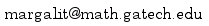

Math 1553
Introduction to Linear Algebra
Fall 2018 — Sections G1 - G5 & H1 - H5

For most course information, see the Math 1553 Master Site:
This is the master syllabus:
The textbook:
For WeBWorK, Piazza, Grades, etc. see Canvas:
For online discussions and polls you can go directly to Piazza:
For on-line access to the supplementary textbook see MyMathLab (course id: jankowski23945):
Instructor
- Professor
- Dan Margalit
- Lecture time
- MW 11:15-12:05 (Sections G1-G5) and 12:20-1:10 (Sections H1-H5)
- Lecture location
- Office
- Skiles 234
- 
- Office hours
- Wed 2-3, Fri 9:30-10:30, and by appointment
Teaching Assistants
- Recitation time
- F 11:15–12:05 (Sections G1-G5) and 12:20-1:10 (Sections H1-H5)
- Recitations
- G1: Skiles 271, Arjun Patel
- G2: Skiles 371, Talha Khawaja
- G3: Clough 423, Athreya Gundamraj
- G4: Skiles 368, Olivia Wogon
- G5: Skiles 254, James Anderson
- H1: Skiles 268, Jesse Jiang
- H2: Skiles 270, Arjun Patel
- H3: Skiles 271, Vajraang Kamat
- H4: Skiles 308, Talha Khawaja
- H5: Skiles 368, Hamed Mousavi
- TA Office Hours
- Arjun Patel, Wed 3-4 Skiles 230
- Talha Khajawa, Tue & Thu 11-12 Clough 250
- Athreya Gundamraj, Tue 3-4 Skiles 230
- Olivia Wogon, Thu 3-4 Skiles 230
- James Anderson, Tue 11-12 Skiles 230
- Jesse Jiang, Wed 9:30-10:30 Skiles 230
- Vajraang Kamat, Thu 11-12 Skiles 230
- Hamed Mousavi, Thu 11:15-12, 1:45-2:45, 3-4:15 Clough 280
Textbook
The textbook for the course is Interactive Linear Algebra, by Dan Margalit and Joe Rabinoff. Click on the icon below.

The offical text for the course according to the bookstore is Lay's book Linear Algebra and its Applications. There is also an option for a bundle consisting of all of the linear algebra and calculus texts needed for the basic math courses at GaTech. You may want to purchase Lay or the bundle if (1) you want an extra reference for the material, (2) you want extra practice exercises, (3) you want access to the online exercises in MyMathLab, a proprietary tool for online homework, or (4) you are going to take calculus at GaTech (it is cheaper to buy the bundle than any individual parts). The choice between the book and the loose leaf version is up to you. Information about the bundle can be found here. Just to emphasize, I will not be using or discussing Lay's book, or assigning any problems from it, this semester. If you do want to use MyMathLab for the extra online homework, I highly recommend buying the bundle directly from the store (second hand codes might not work). This is completely your decision. You probably won't know until the middle of the semester whether you need/want more practice problems.
Other resources
Here is a slide deck that can be used as a reference for the whole course. It will be updated as the semester progresses.
Here is a reference sheet containing most theorems and definitions that you will learn (and be responsible for knowing) over the course of the semester. It will be tweaked as we cover the material.
Here is the interactive row reducer.
The master course web site has supplementary materials for each recitation on the calendar there.
Homework
Homework will be assigned through WeBWorK, an online homework delivery platform accessible via Canvas.
Course Calendar and Materials
| Date | Topic | Materials | WeBWorK | Quiz/Exam | Remarks | |
|---|---|---|---|---|---|---|
| M Aug 20 | Overview, Chapter 1 | Logistics Overview |
||||
| W Aug 22 | 2.1 Systems of linear equations | §2.1 Slides | ||||
| F Aug 24 | Recitation: Ch. 1 and 2.1 | Worksheet 1 (solutions) | Warmup | |||
| M Aug 27 | 2.2 Row reduction | §2.2 Slides | ||||
| W Aug 29 | 2.2 (continued) and 2.3 Parametric form | §2.3 Slides | 2.1 | |||
| F Aug 31 | Recitation: 2.2 and 2.3 | Worksheet 2
(solutions) Supplement (solutions) |
Quiz 1: §2.1 | |||
| M Sep 3 | Labor Day | |||||
| W Sep 5 | 3.1 and 3.2: Vectors, vector equations, and spans | §3.1 Slides §3.2 Slides |
2.2 and 2.3 | |||
| F Sep 7 | Recitation: 3.1 and 3.2 | Worksheet 3
(solutions) Supplement (solutions) |
Quiz 2: 2.2 and 2.3 | |||
| M Sep 10 | 3.3 Matrix equations | § 3.3 Slides | ||||
| W Sep 12 | 3.4 Solution sets | § 3.4 Slides | 3.1 and 3.2 | |||
| F Sep 14 | Recitation: 3.3 and 3.4 | Worksheet 4
(solutions) Supplement (solutions) |
Quiz 3: 3.1 and 3.2 | |||
| M Sep 17 | 3.5 Linear independence | § 3.5 Slides | ||||
| W Sep 19 | 3.6 Subspaces | § 3.6 Slides | 3.3 and 3.4 | |||
| F Sep 21 | Midterm 1: 2.1 - 3.4 | Practice Exam 1 (solutions) |
Midterm 1 (solutions) |
|||
| M Sep 24 | 3.7 and 3.9: Basis, dimension, Rank and basis theorems | § 3.7 Slides § 3.9 Slides |
||||
| W Sep 26 | 4.1 Matrix transformations | § 4.1 Slides | 3.5 and 3.6 | |||
| F Sep 28 | Recitation: 3.7, 3.9, 4.1 | Worksheet 5
(solutions) Supplement (solutions) |
No quiz | Midsemester progress reports submitted by 12 PM | ||
| M Oct 1 | 4.2 One-to-one and onto transformations | § 4.2 Slides | ||||
| W Oct 3 | 4.3 Linear transformations | § 4.3 Slides | 3.7, 3.9, 4.1 | |||
| F Oct 5 | Recitation: 4.2, 4.3 | Worksheet 6
(solutions) Supplement (solutions) |
Quiz 4: 3.7, 3.9, 4.1 | |||
| M Oct 8 | No Class (holiday) | |||||
| W Oct 10 | 4.4 Matrix multiplication | § 4.4 Slides | 4.2 and 4.3 | |||
| F Oct 12 | Recitation: 4.4 | Worksheet 7
(solutions) Supplement (solutions) |
Quiz 5: 4.2 and 4.3 | |||
| M Oct 15 | 4.5 Matrix inverses | § 4.5 Slides | ||||
| W Oct 17 | Review | Review Slides | 4.4 | |||
| F Oct 19 | Midterm 2: 3.5 - 4.4 | Practice Exam 2 (solutions) | Midterm 2 (solutions) |
|||
| M Oct 22 | 5.2 Determinants via cofactors | § 5.2 slides | ||||
| W Oct 24 | 5.1 and 5.3: Determinants and volumes | § 5.1 & 5.3 slides | 4.5 | |||
| F Oct 26 | Recitation: 5.1, 5.2, 5.3 | Worksheet 7
(solutions) Supplement (solutions) |
No quiz | Last day to withdraw (will receive "W"): Oct. 27, 4 PM | ||
| M Oct 29 | 6.1 Eigenvalues and eigenvectors | § 6.1 slides | ||||
| W Oct 31 | 6.2 The characteristic polynomial | § 6.2 slides | 5.1, 5.2, 5.3 | |||
| F Nov 2 | Recitation: 6.1, 6.2 | Worksheet 8
(solutions) Supplement (solutions) |
Quiz 6: 5.1, 5.2, 5.3 | |||
| M Nov 5 | 6.4 Diagonalization | § 6.4 slides | ||||
| W Nov 7 | 6.5 Complex eigenvalues | § 6.5 slides | 6.1 and 6.2 | |||
| F Nov 9 | Recitation: 6.2, 6.4, and 6.5 | Worksheet 9
(solutions) Supplement (solutions) |
Quiz 7: 6.1, 6.2 | |||
| M Nov 12 | 6.6 Stochastic matrices | § 6.6 slides | ||||
| W Nov 14 | Review | Review slides | 6.4, 6.5 | |||
| F Nov 16 | Midterm 3: 4.5 - 6.5 | Practice Exam 3 (solutions) Extra Practice (solutions) |
Midterm 3 (Solutions) |
|||
| M Nov 19 | 7.1-2 Dot products and Orthogonal complements | § 7.1 Slides § 7.2 Slides |
||||
| W Nov 21 | Thanksgiving holiday (no class) | |||||
| F Nov 23 | ||||||
| M Nov 26 | 7.3 Orthogonal projection | § 7.3 Slides | ||||
| W Nov 28 | 7.5 Method of Least Squares | § 7.5 Slides | 6.6, 7.1, 7.2 | |||
| F Nov 30 | Recitation: 7.3, 7.5 | Worksheet 10
(solutions) Supplement (solutions) |
||||
| M Dec 3 | Review | Slides Practice final (solutions) Extra practice (solutions) |
||||
| Tue Dec 11 | Final Exam for ALL SECTIONS of Math 1553: 6:00–8:50pm | |||||